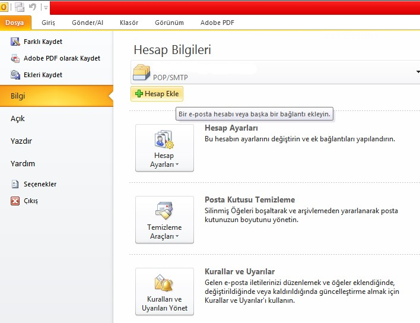
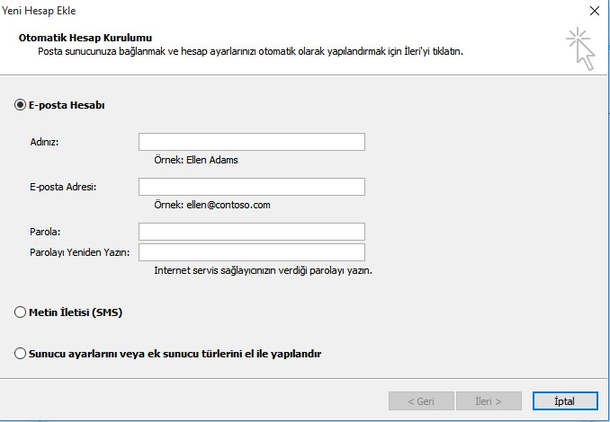
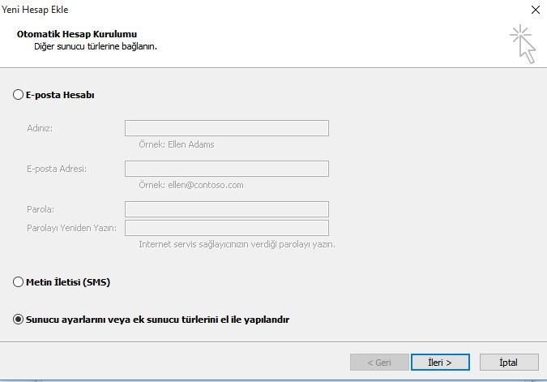
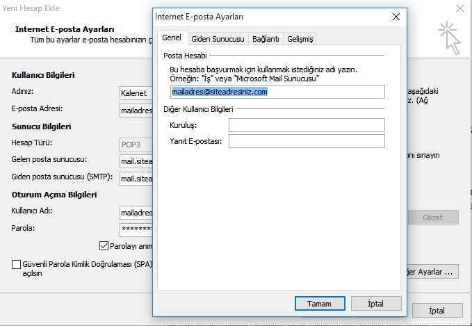
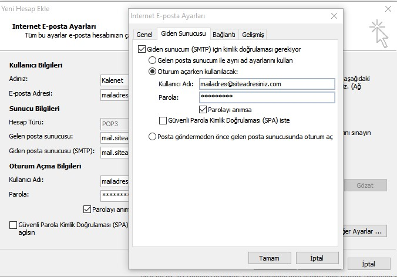
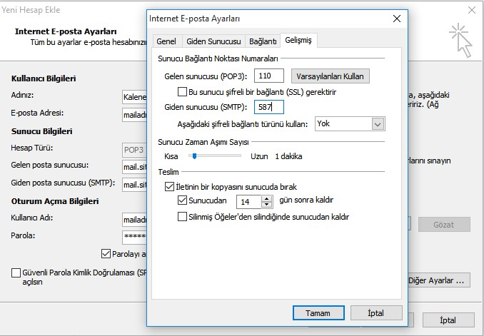
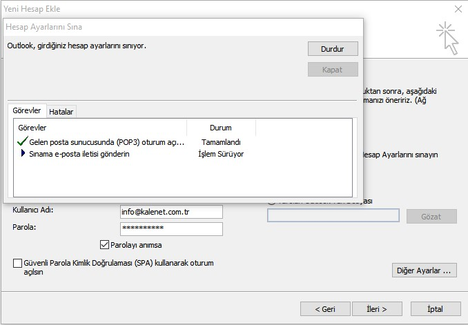
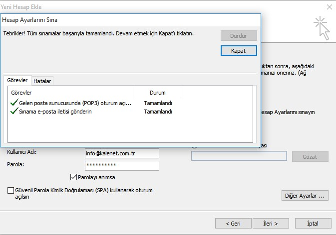
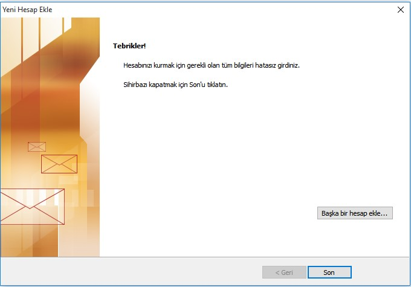

Hesap Ekleme
Firma e-posta adresinizi Outlook üzerinden kullanmak isterseniz aşağıdaki adımları takip ederek gerekli
kurulumu gerçekleştirebilirsiniz.
Öncelikle Outlook hesabınıza yeni e-posta hesabı ekleme ile başlayalım. Outlook menüsünde bulunan
"Dosya"
linkine tıkladığınızda açılan sayfada ki "Hesap Bilgileri" bölümünde bulunan "Hesap
Ekle" butonuna basınız.

Hesap Ekle butonuna bastığınızda "Yeni Hesap Ekle" başlıklı bir pencere sizi karşılayacaktır. Bu
pencerede seçili olarak gelen "E-posta Hesabı" kısmı bazı hazır servislerin kullanımı içindir. Ancak
Kurumsal Mail yapıları hazır bir şekilde gelmediği için en altta bulunan El İle Yapılandırma
seçeneğini işaretleyip İleri butonuna basmamız gerekir.

El ile yapılandırma seçeneğinin açıklaması bazı Outlook sürümlerinde farklı olmaktadır, o yüzden
seçtiğiniz şıkkın içerisinde el ile yapılandır gibi bir ifadenin geçtiğine emin olunuz.
leri butonuna bastıktan sonra yapmak istediğiniz yapılandırma türünü soran bir pencere açılacaktır. Bu
pencerede ilk seçenek olan "İnternet E-posta seçeneğini işaretleyip İleri butonuna
basınız.

Hesap Bilgileri
Hesap Bilgileri sayfası kurumsal e-posta ve sunucu bilgilerini gireceğiniz sayfadır.
Kullanıcı Bilgileri
Kullanıcı bilgileri bölümünde bulunan Adınız kısmına Ad Soyad veya Firma adını giriniz.
E-posta adresi kısmına da kullanacağınız e-posta adresini giriniz.
Sunucu Bilgileri
Bu bölüm mail sunucumuza bağlanacağımız bölümdür. Hesap türünü
POP seçiniz. Gelen posta sunucusu alanına
mail.siteadresiniz.com (örnek: mail.kalenet.com.tr) değerini , Giden posta sunucusu
alanına da
mail.siteadresiniz.com (örnek: mail.kalenet.com.tr) değerini giriniz.
Oturum Açma Bilgileri
Outlook üzerinde kullanmak istediğiniz e-posta adresini ve şifresini bu bölümden giriyoruz. Bu bilgileri
doğru girdiğinizden emin olunuz.
Gelişmiş Ayarlar
Hesap bilgileri bölümündeki tüm içerikleri girdikten sonra "İleri" tuşuna basmadan önce Oturum Açma
Bilgilerinin hemen sağında bulunan "Diğer Ayarlar" butonuna basarak gelişmiş ayarlar
penceresini açınız.

Açılan pencerede ilk olarak "Giden Sunucu" sekmesine tıklayarak Giden sunucum (SMTP) için kimlik
doğrulamasını etkinleştirin seçeneğini işaretleyin.

Daha sonra Gelişmiş sekmesine geçerek
Gelen Sunucu (POP3) değerini
110 girin.
Giden Sunucu (SMTP) değerini
587 olarak düzenleyin.Aşağıdaki resimden ayarların son halini görebilirsiniz.

Tüm değerleri girdikten sonra "Tamam" butonuna basarak gelişmiş ayarlar penceresini kapatabilirsiniz.
Hesap Testi
Hesap Bilgilerini ve Gelişmiş Ayarları tamamladıktan sonra İleri butonuna bastığınızda girmiş olduğunuz
bilgilerin doğrulu test edilir.

Mail sunucusuna bağlanır ve sizin adınıza 1 adet "Sınama İletisi" gönderilir.

Herhangi bir hata yoksa Kapat butonuna basarak son adıma geçiş yapabilirsiniz.
Sonuç
Sınama testinde herhangi bir sorun çıkmazsa e-posta kurulum işlemini başarılı bir şekilde gerçekleştirmiş olursunuz.
Son butonuna basarak hesap ekleme penceresini kapatıp e-posta adresinizi Outlook üzerinden kullanmaya başlayabilirsiniz.
